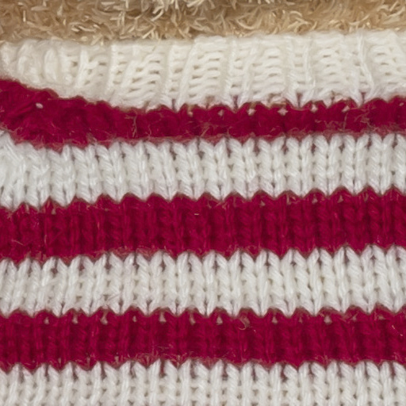
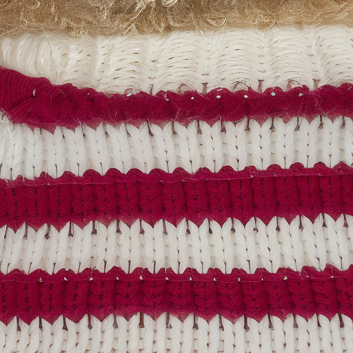
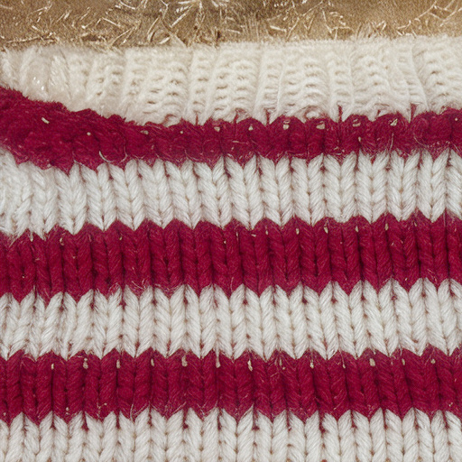
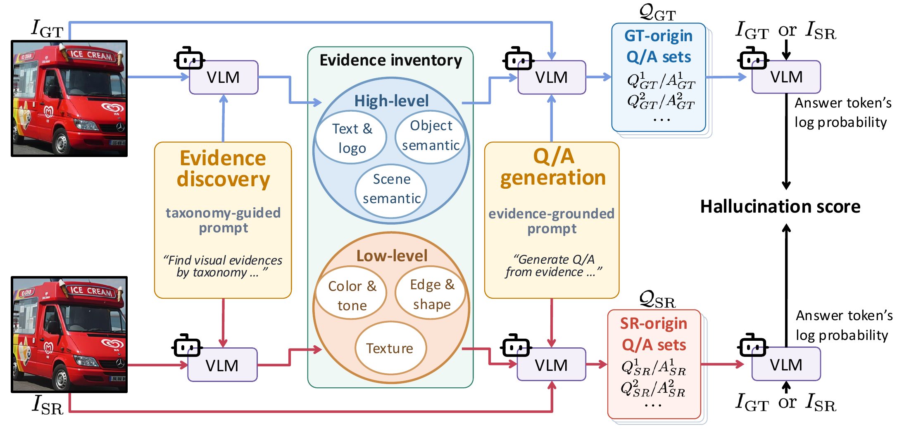
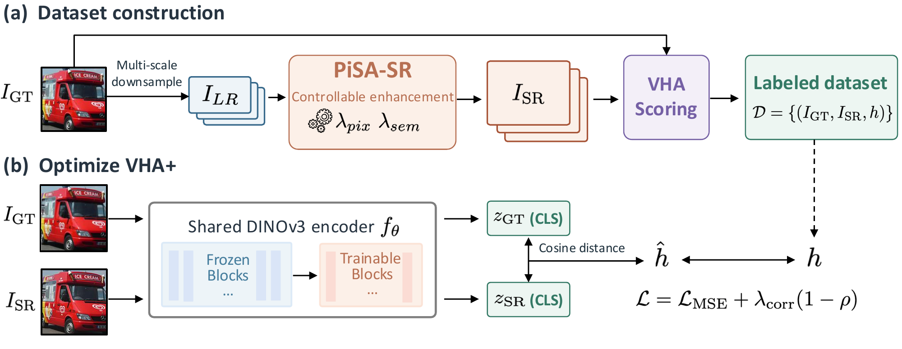

Realistic details can still be hallucinations.
Visual quality and pixel similarity do not tell the whole story. Compare the reference with two super-resolved outputs.
| Metric | StableSR | DiffBIR |
|---|---|---|
| PSNR ↑ | 17.63 | 17.11 |
| MUSIQ ↑ | 74.14 | 75.18 |
| VHA (Ours) ↓ | 0.6382 | 0.4954 |
| VHA+ (Ours) ↓ | 0.8641 | 0.3488 |
PSNR favors StableSR, although it changes the building into a rock-like formation. VHA and VHA+ favor the more faithful DiffBIR output.



| Metric | DiffBIR | PURE |
|---|---|---|
| PSNR ↑ | 23.24 | 23.14 |
| MUSIQ ↑ | 70.82 | 67.51 |
| VHA (Ours) ↓ | 0.5872 | 0.5126 |
| VHA+ (Ours) ↓ | 1.5106 | 0.4791 |
MUSIQ favors DiffBIR even though it changes the knitted texture. VHA and VHA+ favor PURE.
Abstract
Generative image super-resolution produces visually realistic high-resolution images, but may also introduce hallucinations by adding unsupported content or altering existing details. Because existing super-resolution metrics fail to measure whether generated details remain grounded in the reference image, we present a hallucination assessment technique based on bidirectional visual question answering (VQA), which we term VQA-based Hallucination Assessment (VHA). The proposed approach uses a vision-language model (VLM) to determine whether the semantic content and low-level visual evidence in a super-resolved image are supported by its ground-truth counterpart. To this end, it constructs question–answer pairs from each image and evaluates them on both images. Discrepancies between the resulting scores in both directions reveal missing or altered ground-truth information and unsupported additions. However, obtaining these scores requires computationally expensive VLM inference. We therefore develop VHA+, a learned, lightweight model that directly predicts VHA scores from ground-truth and super-resolved image pairs. We construct a hallucination benchmark, VHA-bench, through a human study and show that both VHA and VHA+ correlate highly with human judgments of hallucination.
VHA: evaluating evidence in both directions
Generate questions about semantics and visual attributes, then compare answer support under the ground-truth and super-resolved images.

Ground truth → Super-resolution
Is the original content preserved in the generated image?
Super-resolution → Ground truth
Are the generated details supported by the reference?
VHA+: direct assessment without VLM inference
A lightweight model learns from VHA-labeled image pairs and predicts hallucination scores using a shared DINOv3 encoder.

17.1 ms / pair VHA+ model-call time on an NVIDIA RTX A6000, at 512 × 512 resolution and batch size 1. VHA takes approximately 101 s / pair under the same hardware setting; loading and disk I/O are excluded.
VHA-bench
A human-annotated hallucination benchmark built from RealSR references and six generative super-resolution methods.
- 90
- reference images
- 6
- generative SR methods
- 540
- GT–SR image pairs
- 200
- study participants
StableSR · DiffBIR · SeeSR · OSEDiff · PURE · VOSR
Human judgments assess missing or altered reference evidence and unsupported additions.
Correlation with human hallucination judgments
| Method | Spearman ↑ | Pearson ↑ |
|---|---|---|
| PSNR | 0.162 | 0.181 |
| SSIM | 0.010 | 0.012 |
| LPIPS | 0.083 | 0.089 |
| DISTS | 0.066 | 0.069 |
| DINO | 0.081 | 0.115 |
| CLIP | 0.282 | 0.273 |
| MUSIQ | −0.008 | −0.014 |
| CLIP-IQA | 0.168 | 0.159 |
| Q-Insight | 0.080 | 0.036 |
| VQ-R1 | 0.175 | 0.126 |
| DeQA | 0.145 | 0.156 |
| A-FINE | 0.173 | 0.299 |
| Direct rating | 0.497 | 0.482 |
| HS prompting | 0.543 | 0.563 |
| VHA (Ours) | 0.618 | 0.645 |
| VHA+ (Ours) | 0.659 | 0.675 |
Direct rating, HS prompting, and VHA use Qwen3-VL-8B-Instruct. VHA+ uses a learned DINOv3 model.
BibTeX
@misc{ryou2026vha,
title={VHA: VQA-based Hallucination Assessment for
Generative Image Super-Resolution},
author={Ryou, Donghun and Ha, Inju and Park, Jaeyoo
and Han, Bohyung},
year={2026},
eprint={2610.25770},
archivePrefix={arXiv},
primaryClass={cs.CV},
url={https://arxiv.org/abs/2610.25770}
}